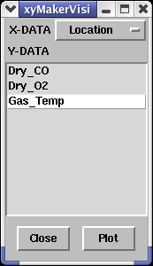
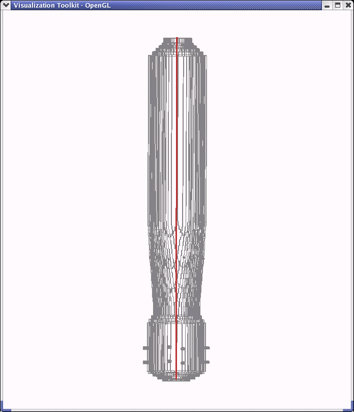
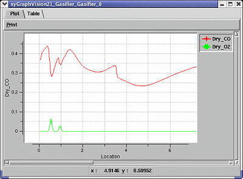

| The XY Module button provides an instantaneous plot of data while the Gasifier Module is still running. The plot illustrates data levels along the Gasifier's central axis (red line at right). Several different datatypes can be illustrated in the XY plot. When first selecting the XY module button, a User Interface (at left) prompts the user to specify which desired datatypes should be displayed. The X-data field specifies how data will be displayed. For example, the Location option displays data levels based on relative distance from the base of the Gasifier. The location is measured from the bottom of the centerline (location=0), to the top (location=6). The Y-data field controls which datatypes are displayed in the plot. For example, the plot selected at left would help illustrate how the gas temperature varies along the central axis of the Gasifier. |

Gasifier Centerline for XY Plots |
|  | When more than one data type is specified in the Y-data field and the order of the measurements is similar (see example at top left), several plots can be displayed simultaneously on the same screen. Plots are continuously updated and therefore become sharper and more detailed as calculations converge. The Table folder provides a table of numerical calculations in spreadsheet format. |